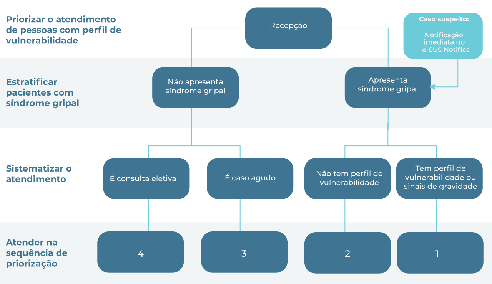
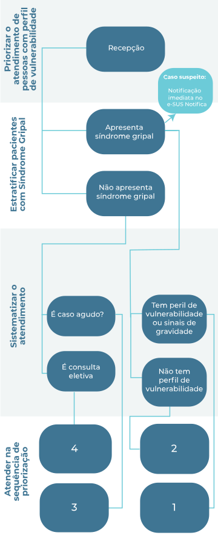

Módulo 2 | Manejo Clínico: Atenção Básica
COVID-19
Manejo da infecção causada pelo novo coronavírus
Aula 1
Preparando Unidades Básicas de Saúde para a Pandemia de COVID-19
Essa é a Aula 1 do Módulo 2 do curso COVID-19 Fiocruz.
Nesta aula, vamos falar da preparação das Unidades Básicas de Saúde: ambiente, equipamentos, triagem e fluxos de pacientes.
Ao final, você vai ser capaz de:
- Preparar os ambientes físicos para a pandemia
- Ajustar os fluxos de recepção de pacientes e triagem
O material de referência básico são os Protocolos de Manejo Clínico de COVID-19 preconizados pelo Ministério da Saúde. Lembramos que as orientações e procedimentos em relação ao coronavírus estão em constante mudança, à medida que aprendemos mais sobre a doença.
Para se manter atualizado, consulte sempre os links e os materiais de apoio indicados neste curso.
A epidemia e os serviços de saúde
O Brasil é um país continental. Por isso, a dinâmica da pandemia por COVID-19 irá variar de acordo com o porte dos municípios, características e densidades populacionais, organização dos serviços de saúde, volume de viajantes nacionais e internacionais e com as medidas de contenção locais.
A primeira manifestação de surto local da pandemia é o aumento do número de pessoas apresentando Síndrome Gripal.
A Síndrome Gripal causada pelo novo coronavírus é caracterizada pela presença de ao menos dois dos seguintes sintomas: tosse, dispnéia, febre, calafrios, mialgia, cefaléia, dor de garganta, alterações recentes do olfato e do paladar. Pacientes com tosse ou dispnéia de início há menos de 15 dias devem ser considerados suspeitos, mesmo na ausência dos outros sintomas.
Outros sintomas comuns são coriza, congestão nasal, náuseas, vômitos, dor abdominal, diarreia.
Os casos leves devem ser acompanhados pela Atenção Primária (APS), com isolamento domiciliar, e casos graves devem ser atendidos na Atenção Especializada e Centros de Referência.
Isso é fundamental para reduzir o contágio e utilizar os recursos do sistema de saúde da melhor forma possível.
O papel das Unidades Básicas de Saúde
As UBS devem assumir papel resolutivo frente ao manejo diagnóstico e terapêutico de pessoas com suspeita de infecção respiratória caracterizada como Síndrome Gripal, causada por COVID-19 ou não. Serão acompanhados nas UBS os casos leves e os moderados sem fatores de risco associados. Deve-se realizar o encaminhamento rápido e adequado dos casos graves, mantendo a coordenação do cuidado./p>
As UBS devem se organizar para:
- Identificar os casos com sintomas de Síndrome Gripal já na recepção, evitando o contágio dos profissionais de saúde e demais pacientes (todo paciente considerado caso suspeito de Síndrome Gripal será abordado como caso suspeito de COVID-19);
- Classificar o caso e estratificar gravidade;
- Nos casos leves e moderados, realizar manejo clínico e isolamento domiciliar;
- Encaminhar para serviço de referência os casos com fatores de risco associados.
- Nos casos graves, estabilizar e encaminhar imediatamente ao serviço de urgência;
- Vigilância local de saúde: notificação, prevenção comunitária e vigilância ativa.
Atenção:
- Realizar triagem por Telemedicina (conforme será apresentado na aula 3);
- Estabelecer o espaço da recepção, espera e isolamento preferencialmente em áreas externas ou tendas, com definição de porta de entrada distinta e totalmente independente para os casos suspeitos de COVID-19 que necessitem de atendimento de urgência no interior das UBS;
- Limitar o acesso à área interna comum das unidades de saúde a pacientes sem sintomas respiratórios agudos, cuja demanda de cuidados de saúde não possa ser atendida na área externa;
- Evitar manipulação desnecessária dos pacientes (Não realizar aferição de sinais vitais ou qualquer rotina de manuseio dos pacientes em pré-consulta pelo técnico de enfermagem/ACS);
- Utilizar adequadamente os Equipamentos de Proteção Individuais (EPIs);
- Realizar frequentemente a limpeza e assepsia com álcool a 70% dos objetos, como as cadeiras em que os pacientes sentam, e dos locais de atendimento.
Organizando a UBS
Manejo diagnóstico e terapêutico de pessoas com suspeita de infecção respiratória caracterizada como Síndrome Gripal
Todos os casos de Síndrome Gripal devem ser considerados casos suspeitos de COVID-19. A conduta desses casos independe da investigação etiológica, visto que o manejo do paciente é centrado no alívio e controle dos sintomas apresentados e na adoção de medidas de isolamento e prevenção de contágio do vírus a outras pessoas.
Atualmente já existem vacinas contra a COVID-19 disponíveis no Brasil e no mundo. A APS possui alta capacidade para a rápida imunização da população, a depender da disponibilidade e distribuição de vacinas no país. A vacinação pelas equipes de APS requer organização da UBS para vacinação; treinamento específico já que são utilizadas diferentes vacinas, com diferentes formas de aplicação e período para a segunda dose; registro adequado na caderneta de vacinação; cadastro de vacinados em sistemas de informação; e estratégias de vigilância e monitoramento de possíveis efeitos adversos. Para saber mais sobre a vacinação contra a COVID-19, acesse e se inscreva no curso Vacinação para COVID-19: protocolos e procedimentos técnicos desenvolvido pelo Campus Virtual Fiocruz – em parceria com o Núcleo de Educação em Saúde Coletiva (Nescon/UFMG) com o apoio do Programa Nacional de Imunização do Ministério da Saúde (PNI).
No vídeo, Dra. Marília Santini (INI/Fiocruz), fala do diagnóstico da COVID-19.
Papel esperado das UBS
- Identificação de caso suspeito de Síndrome Gripal por COVID-19
- Implantação de medidas para evitar contágio na UBS
- Classificação do caso e estratificação da gravidade da Síndrome Gripal
- Condução de casos leves e moderados sem fatores de risco associados: manejo terapêutico e isolamento domiciliar
- Condução de casos moderados com fatores de risco associados e casos graves: estabilização e encaminhamento a serviços de urgência/emergência ou hospitalares
- Notificação imediata
- Monitoramento clínico
- Adoção de medidas de prevenção comunitária e apoio à vigilância ativa
- Desenvolvimento de ações de imunização e campanhas de vacinação dentro do conjunto de atividades de prevenção à COVID-19.
- Armazenamento e acondicionamento adequado dos imunobiológicos, administração e registro das doses aplicadas.
- Monitoramento, manejo e notificação de possíveis eventos e reações adversas à vacina para COVID-19.
Organização da UBS
A Atenção Primária à Saúde é a porta de entrada preferencial do SUS. Durante surtos e epidemias, a APS tem papel fundamental na resposta global à doença em questão. A APS é responsável por oferecer um atendimento resolutivo, com grande potencial de identificação precoce de casos graves que devem ser manejados em serviços especializados.
A UBS deve:
- Verificar a situação de suprimento dos insumos necessários ao combate da pandemia descritos neste curso e nos protocolos do Ministério da Saúde.
- Informar à equipe caso haja indisponibilidade de algum recurso e implantar medidas compensatórias
- Organizar o fluxo de pacientes e preparar o ambiente em conformidade com o preconizado
- Disponibilizar à equipe as informações sobre a regulação assistencial e unidades de referência para casos graves e a pacientes com fatores de risco.
Para saber sobre a organização da UBS para a vacinação contra a COVID-19, acesse e se inscreva no curso Vacinação para COVID-19: protocolos e procedimentos técnicos desenvolvido pelo Campus Virtual Fiocruz – em parceria com o Núcleo de Educação em Saúde Coletiva (Nescon/UFMG) com o apoio do Programa Nacional de Imunização do Ministério da Saúde (PNI).
Atendimento
A APS é responsável pelo atendimento resolutivo, pela longitudinalidade e coordenação do cuidado dos pacientes com Síndrome Gripal. Por isso, o primeiro passo na cascata de manejo da COVID-19 é a identificação de casos sintomáticos de Síndrome Gripal.
Recepção e triagem dos pacientes
A UBS deve se organizar para que todos os pacientes que cheguem, independente do motivo, passem por uma triagem.
A triagem pode ser realizada por recepcionista, porteiro, agente comunitário de saúde ou técnico de enfermagem - em uso de EPI - e consiste ao menos na seguinte pergunta:
Você está com algum desses sintomas: dificuldade para respirar, cansaço, tosse, febre, dor de garganta, falta de ar, dor no corpo, dor de cabeça, calafrios?
Em caso positivo, o paciente é caso suspeito para Síndrome Gripal.

Se o paciente for caso suspeito para Síndrome Gripal, é preciso que tenha acesso à máscara cirúrgica e que seja orientado quanto à forma correta de utilização. Também devem lhe ser fornecidos meios para a higienização das mãos (álcool gel ou água e sabão) e preparada ao paciente uma área isolada ou sala específica com porta fechada, que seja ventilada.
Veja as orientações da Dra. Margareth Dalcolmo, pneumologista e pesquisadora da Fiocruz, sobre como fazer a triagem de pessoas com sintomas de Síndrome Gripal.
Atendimento prioritário
Dada a letalidade muito mais elevada da COVID-19 entre os idosos, deve-se priorizá-los para o atendimento. Pessoas com doenças crônicas, pessoas com deficiência, gestantes e puérperas também devem ser priorizadas, de acordo com a seguinte classificação:
|
Alta vulnerabilidade |
|
|
Vulneráveis |
|
|
Risco habitual |
|
|
Consultas eletivas e agendadas |
|
| Comorbidades que indicam acompanhamento para COVID-19 em Centros de Referência | |
|---|---|
|
|
A Dra. Margareth Dalcolmo, pneumologista e pesquisadora da Fiocruz, fala sobre como organizar o fluxo de atendimento:
Medidas e orientações para evitar o contágio
Medidas dos profissionais
das UBS
Medidas dos profissionais
das UBS
Todas as pessoas que procuram a Unidade Básica de Saúde devem ser orientadas em relação ao seu papel na redução de risco de contágio. Devem ser, portanto, orientadas a ligar para Unidade Básica de Saúde ou entrar em contato com o agente comunitário de saúde da sua área antes de se dirigir à unidade. A unidade deve oferecer triagem por telemedicina.
Se for necessária a avaliação presencial na UBS, devem ser reforçadas as orientações quanto às medidas de prevenção e redução de risco de transmissão e contágio da COVID-19.
Providencie opções de higienização como lavagem das mãos com água e sabão ou álcool a 70%.
Garantir o uso adequado de máscaras e se for o caso, fornecer máscaras cirúrgicas aos pacientes na UBS.
Orientações aos pacientes
Orientações aos pacientes
Evite ao máximo tocar nos olhos, nariz e boca. Evite tocar em superfícies e objetos enquanto aguarda. Lave as mãos caso toque em superfícies, objetos ou na face.
Se estiver espirrando ou tossindo, cubra o rosto com o cotovelo
Mantenha-se distante (cerca de 1 a 2 metros) de outras pessoas
Procure atendimento por telemedicina antes de se dirigir a Unidade Básicas de Saúde. Informe-se entrando em contato com sua UBS ou Prefeitura municipal.
Use máscara ao sair de casa. Lave as mãos antes de sair de casa.
Equipes de saúde que fazem visitas domiciliares também precisam ficar atentas às medidas de proteção.
A Dra. Margareth Dalcolmo, pneumologista e pesquisadora da Fiocruz, fala dos cuidados para visitas domiciliares e explica sobre as medidas de proteção e uso de máscaras. Confira:
Fluxo de atendimento
A equipe de saúde deve atuar de forma integrada, com apoio entre todos os profissionais, facilitando o fluxo de informação e decisão.
O atendimento deve ser realizado prioritariamente por telefone. Caso a pessoa esteja na Unidade Básica de Saúde e precise de atendimento, o fluxo de atendimento Fast Track proposto pelo Ministério de Saúde é:
| SEQUÊNCIA DE ATENDIMENTO | INFRAESTRUTURA IDEAL |
|---|---|
|
Em área aberta, ventilada, espaçosa
A Unidade Básica de Saúde deve ter reservados diferentes ambientes para:
|
Todos os espaços destinados ao atendimento de pacientes com suspeita de COVID-19 devem ser preferencialmente amplos e ventilados. Priorizar áreas abertas para a recepção, espera e isolamento desses pacientes, caso necessário.
Fluxo Fast Track
O fluxo de pacientes deve proteger de forma adequada os profissionais envolvidos no atendimento e os usuários que buscam serviços de atendimento nas unidades de saúde. Medidas para diminuir a exposição ao Sars-CoV-2 e a circulação de pessoas nestas unidades devem ser adotadas.
 A identificação da gravidade da Síndrome Gripal é a ferramenta primordial para definir a conduta correta para cada caso, seja para manter o acompanhamento do paciente na APS ou para encaminhá-lo aos centros de referência, urgência/emergência ou hospitais.
Avalie a remarcação de consultas eletivas para o período após o término da pandemia.
Chegamos ao fim da aula
Você terminou a Aula 1 do Módulo 2 do curso COVID-19
Nessa aula, você viu como preparar os ambientes físicos para a pandemia e como ajustar os fluxos de recepção de pacientes e triagem.
Na próxima aula, vamos mostrar como preparar os ambientes físicos para a pandemia.
Ajustar os fluxos de recepção de pacientes e triagem.
Siga em frente!